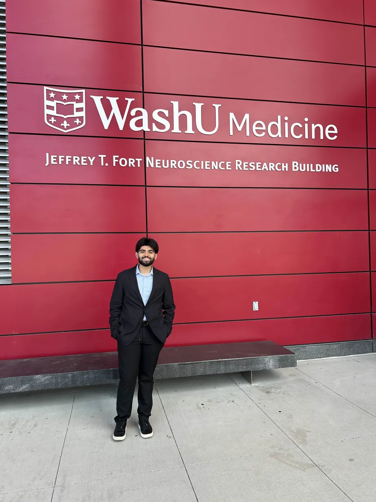

Overview
During my time in this program I worked primarily on drafting, designing, and prototyping modifications to stereotactic depth electrodes to enable tissue sampling alongside recording. This experience was a great way to step away from coding and think more about the device design aspect of neurotechnology.
Accomplishments
- I conducted extensive research into various biomarkers of epileptogenic tissue and consideration about which of them could be feasibly implemented into a device matching the specs of existing sEEG electrodes.
- In an effort to apply our findings on relevant epileptic biomarkers, my partner on this project and I brainstormed over 12 prototypes for our objective exploring the use of rotational and tensile forces, cell-adhesion molecules, and suction-based approaches. Each of these were designed and validated ones were 3d printed at a 10x scale for testing which was conducted in jello (who could've known jello would make an accurate brain phantom).
- To explore the commercialization process of devices like these, we also delved into the regulatory pathways under which this device would be approved by the FDA alongside some prelimiary market research to uncover the ways in which this device could be brought to market.
